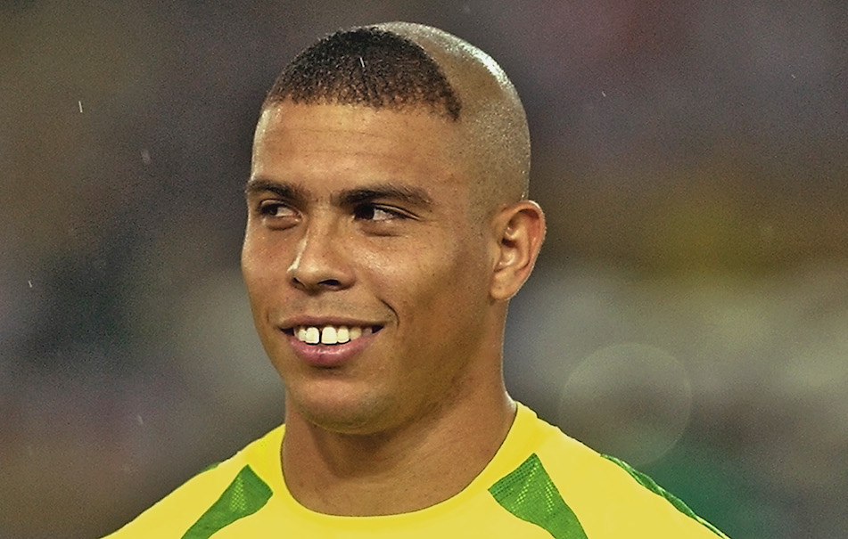

Dopo il ritiro dal calcio giocato, Ronaldo ha continuato a partecipare alle iniziative promosse dal Programma delle Nazioni Unite per lo Sviluppo (UNDP), del quale è ambasciatore dal 2000. Insieme ad altri grandi ex calciatori, è sceso in campo più volte nel tradizionale incontro benefico promosso dalle Nazioni Unite allo scopo di raccogliere fondi e sensibilizzare l'opinione pubblica mondiale sul tema della povertà. Nel febbraio 2011 ha avviato, insieme a Marcus Buaiz, la 9ine Sport & Entertainment, una società di sportmarketing che si occupa della gestione dell'immagine di calciatori e sportivi brasiliani. Nel dicembre dello stesso anno è entrato a far parte del consiglio di amministrazione del Comitato Organizzatore Locale brasiliano (Comitê Organizador Local da Copa do Mundo da FIFA Brasil 2014 - COL) in vista del campionato del mondo 2014. Il 12 dicembre 2014 Ronaldo ha acquistato il 10% delle quote dei Fort Lauderdale Strikers, club militante nella North American Soccer League, diventandone un socio di minoranza. Il 15 gennaio 2015, nel corso di una conferenza stampa, ha dichiarato di escludere un futuro da allenatore e di avere l'intenzione di fondare un'accademia giovanile negli Stati Uniti. Il 3 settembre 2018 annuncia di aver acquistato il 51% delle azioni del Real Valladolid, club allora militante nella Primera División. Il 18 dicembre 2021 acquista il 90% delle quote del Cruzeiro.
premere l'immagine di sinistra
